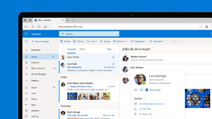

Cómo iniciar sesión en Hotmail
Ahorrar tiempo al redactar correos electrónicos con Copilot en Outlook
Le ofrecemos una evaluación gratuita de Copilot Pro.
Iniciar sesión en Hotmail o Outlook.com
Hotmail ahora es Outlook.com
Para iniciar sesión en Hotmail, necesitarás el nombre de usuario y la contraseña de tu cuenta de Microsoft.

Sugerencias:
- Al iniciar sesión, selecciona Sí en el mensaje "¿Mantener la sesión iniciada?" si quieres ir directamente a tu buzón la próxima vez (no se recomienda para equipos compartidos). Como alternativa, activa la casilla "No volver a mostrar esto" y selecciona No para que se te pida la contraseña cada vez.
- Si no puedes iniciar sesión o has olvidado tu nombre de usuario o contraseña, usa nuestro Solucionador de problemas de inicio de sesión.
- Si deseas abrir una nueva cuenta, puedes crear una aquí.
Consulte también
- Introducción al nuevo Outlook para Windows
- Administrar cuentas de correo electrónico en Outlook.com
- Desbloquear mi cuenta de Outlook.com
- Exploradores admitidos para Outlook en la Web y Outlook.com
- Si inicias sesión con una cuenta profesional o educativa, lee Cómo iniciar sesión en Outlook en la Web
¿Le ha sido útil esta información?